— 第 1 場 —
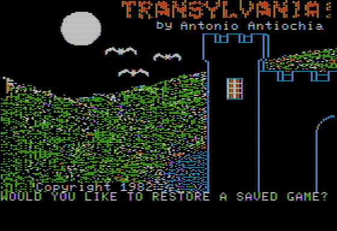
セーブデータを復元しますか？
あるところに、不思議な世界へ旅立つ冒険者がいました。
ターン 1 ・ 入力: NO
— 第 2 場 —
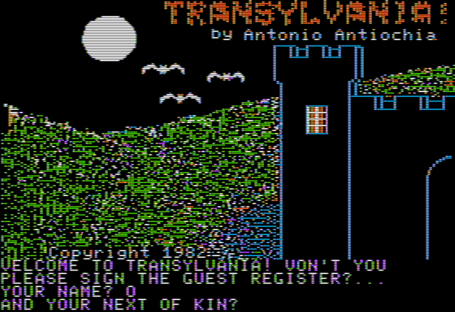
トランシルバニアへようこそ！ゲスト名簿に署名をお願いします。お名前は？それと、緊急連絡先は？
冒険者がたどり着いたのは、恐ろしい噂が絶えないトランシルバニアでした。入り口で名前を書き込むよう言われました。
ターン 2 ・ 入力: ADVENTURER, NONE
— 第 3 場 —
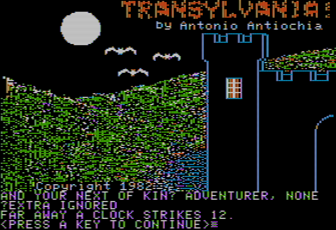
遠くで時計が12時を告げています。
冒険者が名簿に名前を書くと、遠くからゴーンと12時を知らせる鐘の音が響き渡りました。
ターン 3 ・ 入力: <SPACE>
— 第 4 場 —
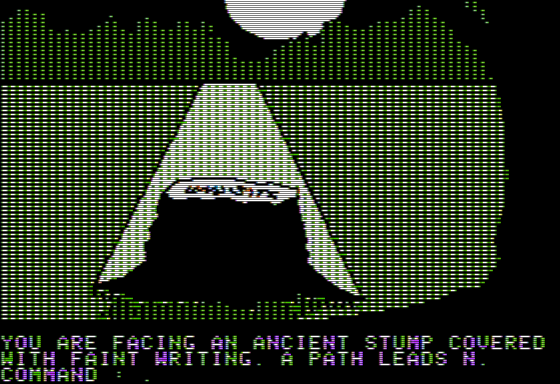
かすかに文字が刻まれた、古びた切り株の前に立っています。北へ道が続いています。
夜の森へ踏み出すと、そこには不思議な文字が書かれた古い切り株がありました。
ターン 4 ・ 入力: N
— 第 5 場 —
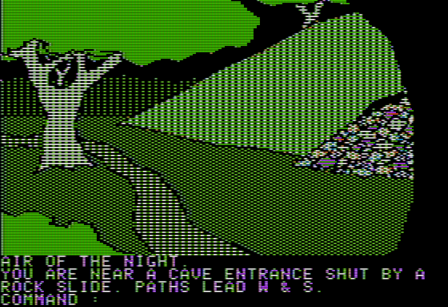
魔女の甲高い笑い声が、静まりかえった夜の空気に突き刺さりました。岩崩れで塞がれた洞窟の入り口の近くにいます。
突然、どこからか魔女の不気味な笑い声が聞こえてきました。辺りを見渡すと、岩で塞がれた洞窟がありました。
ターン 5 ・ 入力: W
— 第 6 場 —
 森の暗い場所にいます。しわくちゃの手紙が落ちています。
森の暗い場所にいます。しわくちゃの手紙が落ちています。
さらに森の奥へと進むと、あたりは真っ暗になりました。足元には古くしわくちゃになった手紙が落ちていました。
ターン 6 ・ 入力: N
— 第 7 場 —
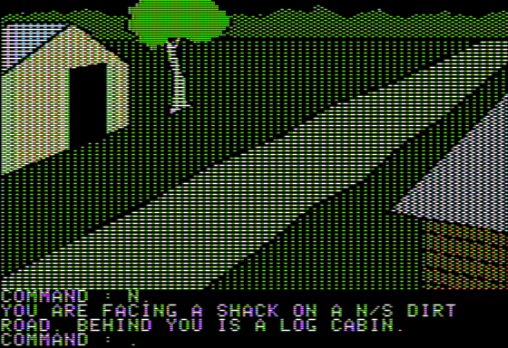
土の道の脇に、小さな小屋が見えます。後ろには丸太小屋があります。
道なりに進むと、ぽつんと佇む小さな小屋が見えてきました。
ターン 7 ・ 入力: N
— 第 8 場 —
 壊れた馬車が止まっています。
壊れた馬車が止まっています。
さらに歩いていくと、壊れて動かなくなった馬車が道端に捨てられていました。
ターン 8 ・ 入力: ENTER WAGON
— 第 9 場 —
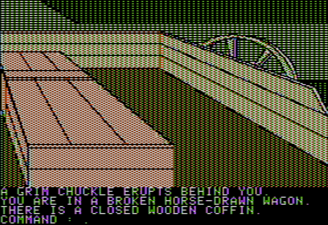
閉じたままの木の棺があります。
馬車の中をのぞくと、古びた木の棺が置かれていました。冒険者は恐る恐る、その蓋を開けてみることにしました。
ターン 9 ・ 入力: OPEN COFFIN
— 第 10 場 —
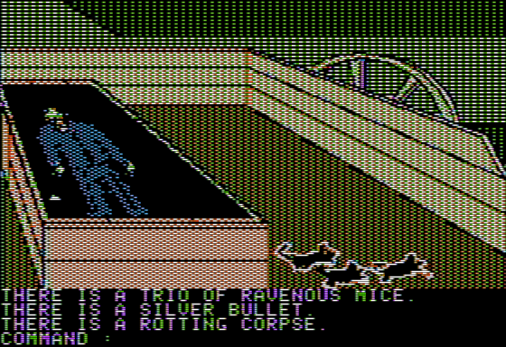
ひどい悪臭が鼻をつきます。飢えた3匹のネズミと、銀の弾丸、そして腐敗した死体がありました。
蓋を開けた瞬間、鼻をつくようなひどい臭いがしました。中にはお腹をすかせたネズミたちと、キラリと光る銀の弾丸が入っていました。
ターン 10 ・ 入力: TAKE MICE
— 第 11 場 —
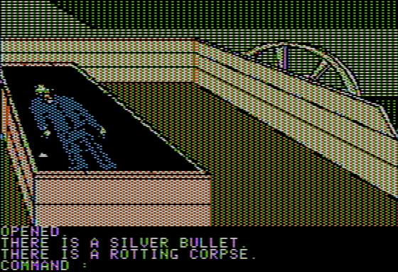
（ネズミを拾いました）
冒険者はまず、棺の中にいたネズミたちをひょいと拾い上げました。
ターン 11 ・ 入力: TAKE BULLET
— 第 12 場 —
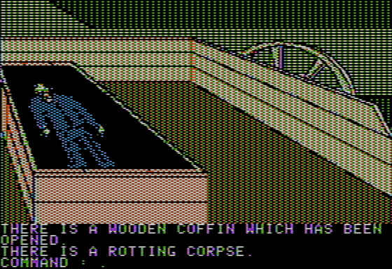
（銀の弾丸を拾いました）
次に、大切そうに銀の弾丸を拾い上げました。これで何かあった時に備えられます。
ターン 12 ・ 入力: D
— 第 13 場 —
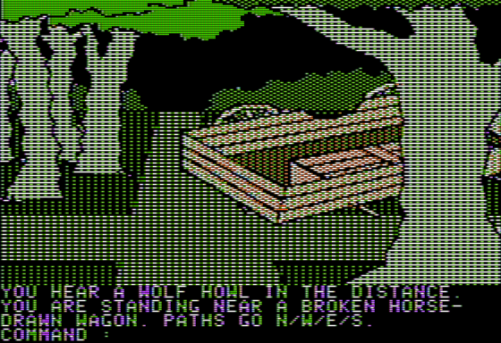
遠くで狼の遠吠えが聞こえます。
冒険者が馬車から外に出ると、遠くの方から狼の寂しげな遠吠えが聞こえてきました。
ターン 13 ・ 入力: N
— 第 14 場 —
ここは墓地です。木の十字架と墓石、そして恐ろしい人狼がいます。
さらに歩いていくと、そこは静まり返った墓地でした。なんと、そこには恐ろしい人狼が待ち構えていました。
ターン 14 ・ 入力: S
— 第 15 場 —
あまりの恐ろしさに、冒険者は急いで馬車がある場所まで戻りました。
ターン 15 ・ 入力: N
— 第 16 場 —
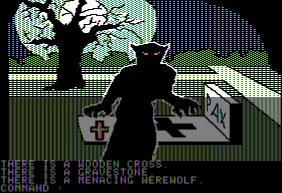
ここは墓地です。木の十字架と墓石、そして恐ろしい人狼がいます。
しかし、勇気を出してもう一度墓地へ向かうと、やはり人狼がそこに立っていました。
ターン 16 ・ 入力: S
— 第 17 場 —
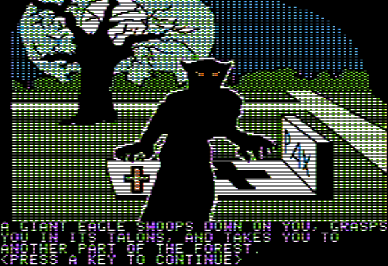
巨大なワシが急降下してきて、あなたを掴んで森の別の場所へ運び去りました。
すると突然、空から巨大なワシが舞い降りてきました。冒険者は鋭い爪でひょいと掴み上げられ、遠くの森へと運ばれていきました。
ターン 17 ・ 入力: <SPACE>
— 第 18 場 —
 あなたは森の暗い場所にいます。しわくちゃの手紙が落ちています。
あなたは森の暗い場所にいます。しわくちゃの手紙が落ちています。
目が覚めると、そこは薄暗い森の中でした。地面には、古くてしわくちゃになった手紙が落ちていました。
ターン 18 ・ 入力: N
— 第 19 場 —
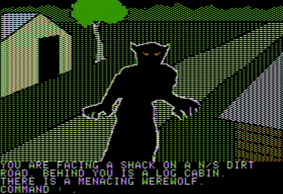
目の前には土の道沿いに小屋があり、後ろには丸太小屋があります。恐ろしい人狼がいます。
道を歩いていくと、小さな小屋が見えてきました。しかしそこには、なんと恐ろしい人狼が待ち構えていたのです。
ターン 19 ・ 入力: S
— 第 20 場 —
あなたは森の暗い場所にいます。しわくちゃの手紙と、恐ろしい人狼がいます。
急いで暗い森の中へ逃げ戻りました。けれど、人狼はしつこく追いかけてきました。
ターン 20 ・ 入力: S
— 第 21 場 —
あなたは湖の岸辺にいます。ウシガエルと小さなヨットがあります。
必死に走って辿り着いたのは、静かな湖の岸辺でした。そこには大きなウシガエルと、小さなヨットが浮かんでいました。
ターン 21 ・ 入力: E
— 第 22 場 —
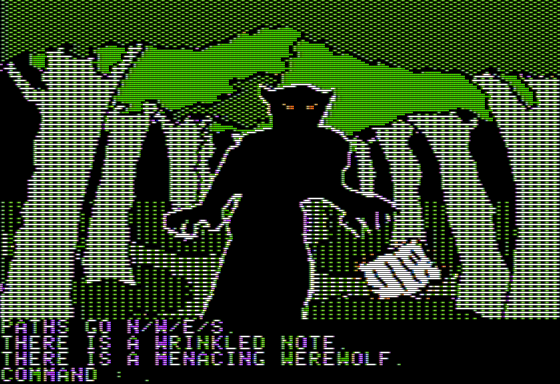
あなたは森の暗い場所にいます。しわくちゃの手紙と、恐ろしい人狼がいます。
再び森へ戻ってみましたが、そこにも人狼の姿がありました。どこへ行っても逃げられないようです。
ターン 22 ・ 入力: W
— 第 23 場 —
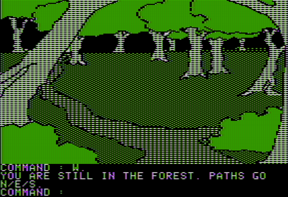
あなたはまだ森の中にいます。
冒険者は迷路のような森の中を、あちこちへと歩き回りました。
ターン 23 ・ 入力: E
— 第 24 場 —
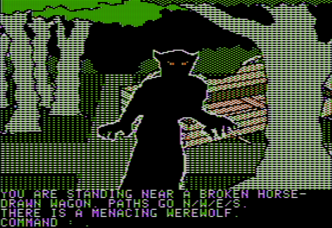
壊れた馬車のある場所です。遠くで狼の遠吠えが聞こえます。恐ろしい人狼がいます。
ふと見ると、そこには壊れた馬車が捨てられていました。遠くから不気味な遠吠えが聞こえ、すぐそばまで人狼が迫っていました。
ターン 24 ・ 入力: W
— 第 25 場 —
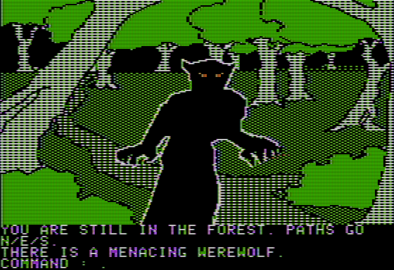
恐ろしい人狼がいます。
冒険者は急いで森の中を駆け抜けました。しかし、すぐ後ろまで恐ろしい人狼が迫ってきます。
ターン 25 ・ 入力: N
— 第 26 場 —
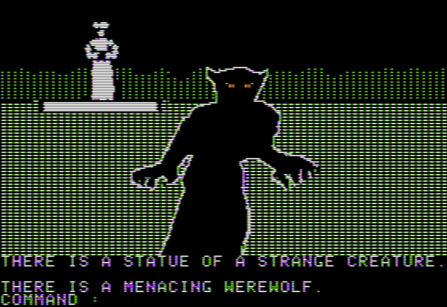
広場に出ました。奇妙な生物の像があります。
必死に逃げた先は、小さな広場でした。そこには見たこともない奇妙な生き物の像が立っていました。
ターン 26 ・ 入力: E
— 第 27 場 —
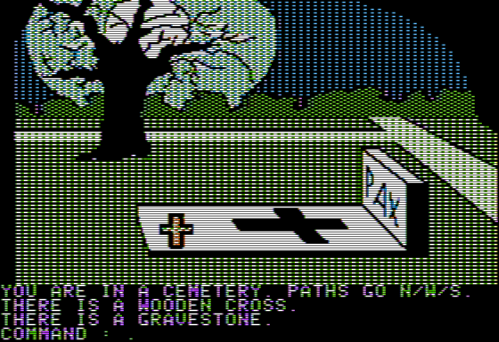
墓地に到着しました。木の十字架と墓石があります。
さらに進むと、しんとした墓地に辿り着きました。古びた十字架と墓石が、静かに冒険者を迎えます。
ターン 27 ・ 入力: N
— 第 28 場 —
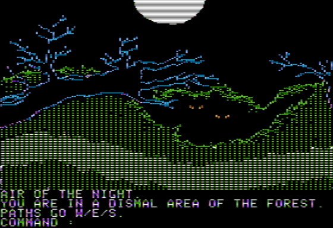
森の薄暗い場所にいます。魔女の笑い声が夜の静寂を切り裂きました。
森の奥へ進むと、辺りはさらに暗くなりました。突然、空に魔女の甲高い笑い声が響き渡り、あたりを震わせました。
ターン 28 ・ 入力: E
— 第 29 場 —
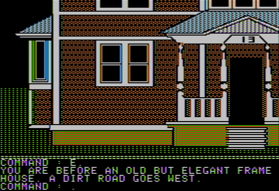
古くて優雅な木造の家の前にいます。
暗い森を抜けると、一軒の古い屋敷が見えてきました。古びてはいますが、どこか気品のある不思議な家でした。
ターン 29 ・ 入力: ENTER HOUSE
— 第 30 場 —
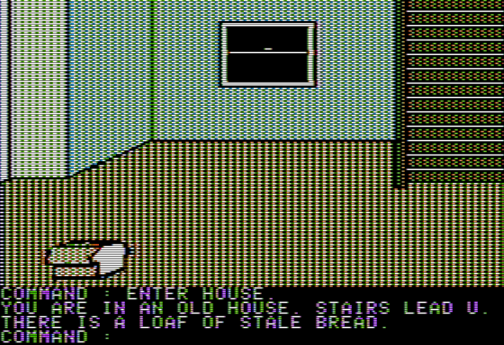
古い家の中にいます。階段が上に続いています。古くなったパンがあります。
冒険者は恐る恐る家の中に入りました。そこには古くなったパンが転がっており、上へと続く階段がありました。
ターン 30 ・ 入力: U
— 第 31 場 —
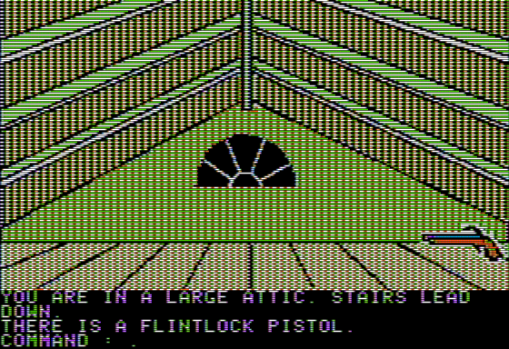
広い屋根裏部屋にいます。火打ち石式のピストルがあります。
階段を上がると、広々とした屋根裏部屋に出ました。そこには、古びたピストルがぽつんと置かれていました。
ターン 31 ・ 入力: TAKE PISTOL
— 第 32 場 —
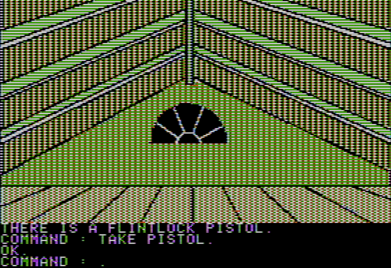
ピストルを手に入れました。
冒険者はそのピストルを手に取りました。これで、恐ろしい敵に立ち向かう準備が整いました。
ターン 32 ・ 入力: LOAD PISTOL
— 第 33 場 —
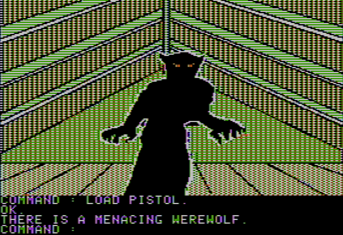
恐ろしい人狼が現れました。
すると、目の前に恐ろしい人狼が姿をあらわしました。冒険者は緊張しましたが、しっかりと銃を構えました。
ターン 33 ・ 入力: SHOOT WEREWOLF
— 第 34 場 —
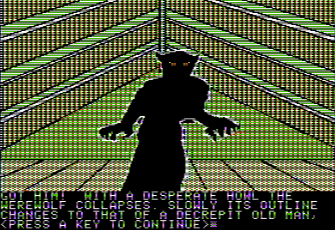
当たった！人狼は悲鳴を上げて倒れ、痩せこけた老人の姿に変わりました。
冒険者が引き金を引き、弾丸は見事に命中しました。人狼は悲しげな遠吠えを上げて倒れると、ゆっくりと老人の姿に変わっていきました。
ターン 34 ・ 入力: <SPACE>
— 第 35 場 —
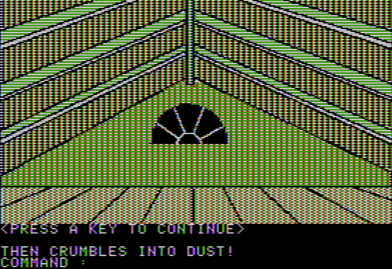
そして、塵となって消えていきました！
しかし、老人の姿になったのもつかの間、体はさらさらと砂のように崩れ、跡形もなく消えてしまいました。
ターン 35 ・ 入力: D
— 第 36 場 —
古い家の中にいます。階段が上に続いています。
静かになった屋根裏部屋を後にし、冒険者は階段を降りて下の階へ戻りました。
ターン 36 ・ 入力: W
— 第 37 場 —
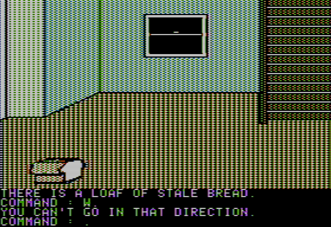
そちらへは行けません。
冒険者はあちこち歩いて出口を探しましたが、壁に突き当たって進めない場所もありました。
ターン 37 ・ 入力: E
— 第 38 場 —
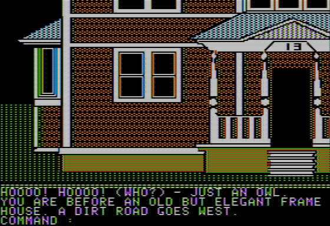
ホーホー！ただのフクロウです。古くて優雅な家の前にいます。
外に出ると、どこからかフクロウの鳴き声が聞こえてきました。辺りは静まり返り、古い家がひっそりと佇んでいます。
ターン 38 ・ 入力: W
— 第 39 場 —
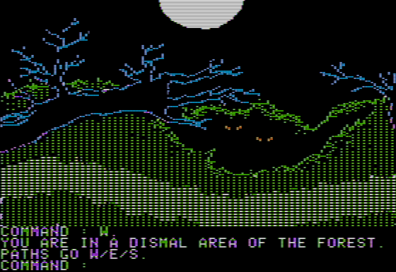
森の薄暗い場所にいます。
冒険者は家を離れ、薄暗い森の中へと足を踏み入れました。道はいくつかに分かれていました。
ターン 39 ・ 入力: S
— 第 40 場 —
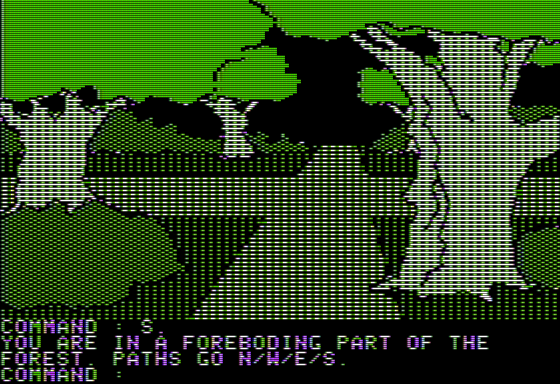
不気味な森の中にいます。
さらに進むと、森はますます不気味な空気に包まれていきました。冒険者は慎重に歩みを進めました。
ターン 40 ・ 入力: W
— 第 41 場 —
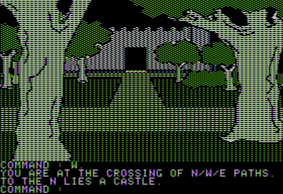
北・西・東へ続く道の分かれ道です。北にはお城が見えます。
しばらく歩くと、道が三つに分かれていました。北の方を眺めると、遠くに大きな城がそびえ立っています。
ターン 41 ・ 入力: W
— 第 42 場 —
 壊れた馬車が止まっている場所です。
壊れた馬車が止まっている場所です。
冒険者は西へと進みました。すると、そこには古びて壊れた馬車がぽつんと取り残されていました。
ターン 42 ・ 入力: N
— 第 43 場 —
ここは墓地です。木の十字架と墓石があります。「出ていけ！」という荒々しい声が響きました。
さらに北へ進むと、静まりかえった墓地にたどり着きました。突然、どこからか「出ていけ！」という恐ろしい怒鳴り声が聞こえてきました。
ターン 43 ・ 入力: TAKE CROSS
— 第 44 場 —
木の十字架を手に入れました。
冒険者は怖かったけれど、地面に突き刺さっていた木の十字架を手に取りました。何かのお守りになるかもしれません。
ターン 44 ・ 入力: S
— 第 45 場 —
壊れた馬車が止まっている場所に戻ってきました。
急いで墓地を後にし、南へ戻りました。再び、あの壊れた馬車のそばまで戻ってきました。
ターン 45 ・ 入力: E
— 第 46 場 —
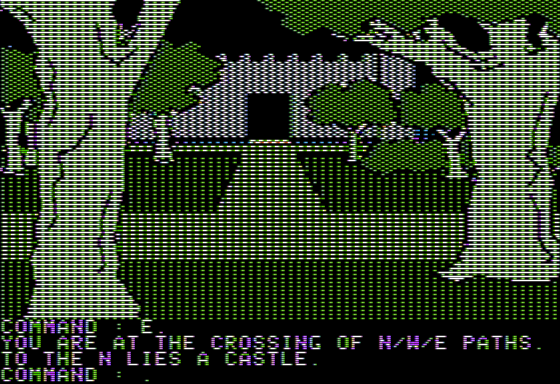
北・西・東へ続く道の分かれ道です。北にはお城が見えます。
冒険者は東へ向かい、再び道の分かれ道にやってきました。目の前には、目的のお城が待ち構えています。
ターン 46 ・ 入力: N
— 第 47 場 —
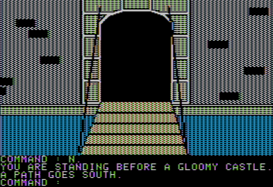
薄暗いお城の前に立っています。
意を決して北へ歩みを進めると、ついに薄暗く不気味なお城の正門にたどり着きました。
ターン 47 ・ 入力: N
— 第 48 場 —
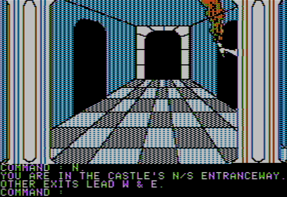
お城の玄関口に入りました。
重い扉を開けて中へ入ると、そこは冷たい空気が漂うお城の玄関口でした。
ターン 48 ・ 入力: E
— 第 49 場 —
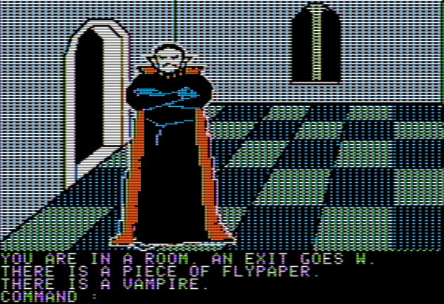
部屋の中に、ハエ取り紙と吸血鬼がいます。
さらに奥へ進むと、そこには恐ろしい吸血鬼が待ち構えていました。部屋の隅には、なぜか一枚のハエ取り紙が落ちていました。
ターン 49 ・ 入力: SHOW CROSS
— 第 50 場 —
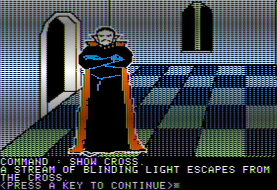
十字架から、目がくらむほどの光が放たれました。
冒険者が勇気を持って十字架を掲げると、まばゆい光が部屋いっぱいに広がりました。
ターン 50 ・ 入力: <SPACE>
— 第 51 場 —
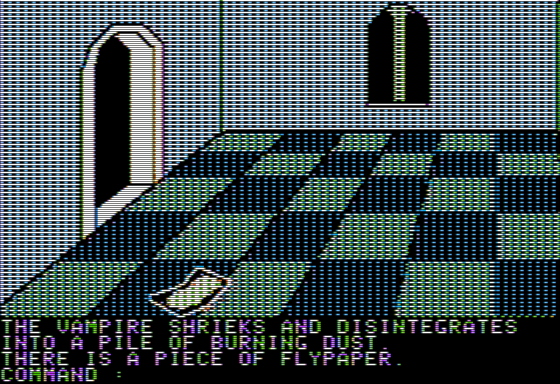
吸血鬼は悲鳴を上げ、燃える塵となって消え去りました。
光を浴びた吸血鬼は、恐ろしい悲鳴を上げてあっけなく灰になってしまいました。
ターン 51 ・ 入力: TAKE FLYPAPER
— 第 52 場 —
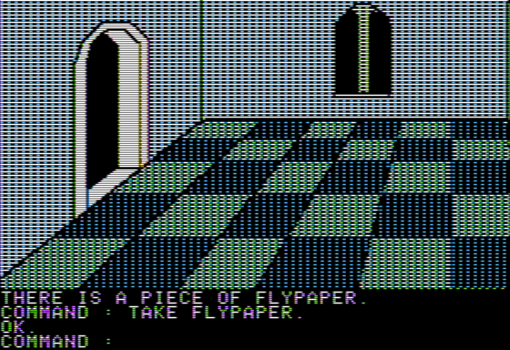
ハエ取り紙を手に入れました。
敵がいなくなったところで、冒険者は落ちていたハエ取り紙を拾い上げました。
ターン 52 ・ 入力: W
— 第 53 場 —
お城の玄関口に戻りました。
冒険者は再び、お城の広い玄関口へと戻ってきました。
ターン 53 ・ 入力: N
— 第 54 場 —
広大な部屋に到着しました。階段が上と下へ伸びています。
北へ進むと、とても大きな部屋に出ました。そこには上へと続く階段と、下へと続く通路がありました。
ターン 54 ・ 入力: D
— 第 55 場 —
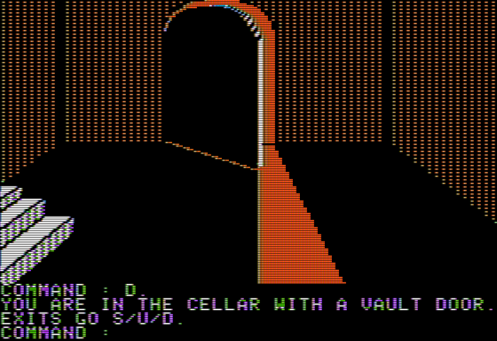
金庫の扉がある地下室に降りてきました。
冒険者は暗い通路を降りて、金庫のような重い扉がある地下室にたどり着きました。
ターン 55 ・ 入力: D
— 第 56 場 —
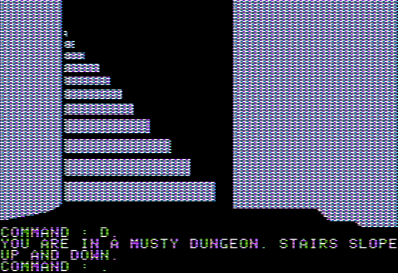
カビ臭い地下牢です。階段が上と下へ伸びています。
さらに深くへと降りていくと、そこはカビの臭いが漂う、薄暗い地下牢でした。
ターン 56 ・ 入力: D
— 第 57 場 —
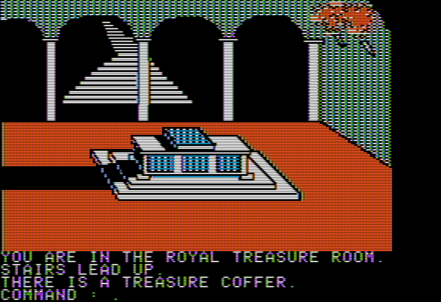
王家の宝物庫にいます。宝箱があります。
さらに階段を降りていくと、そこは豪華な王家の宝物庫でした。部屋の隅には、古びた宝箱がひとつ置かれていました。
ターン 57 ・ 入力: OPEN COFFER
— 第 58 場 —
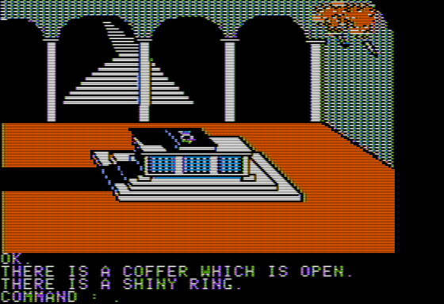
宝箱が開きました。光り輝く指輪があります。
冒険者がそっと宝箱を開けると、中からまばゆい光を放つ指輪が現れました。
ターン 58 ・ 入力: TAKE RING
— 第 59 場 —
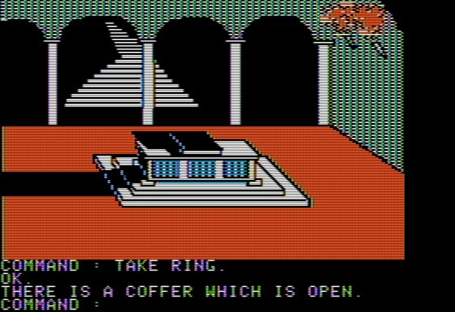
指輪を手に入れました。
冒険者はその美しい指輪を大切に手に取りました。
ターン 59 ・ 入力: U
— 第 60 場 —
カビ臭い地下牢に戻りました。
指輪を手に入れた冒険者は、来た道を戻ろうと階段を上り、再び地下牢へと戻りました。
ターン 60 ・ 入力: U
— 第 61 場 —
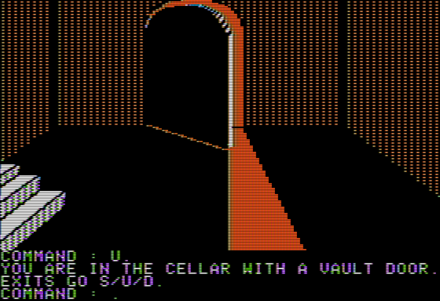
金庫の扉がある地下室にいます。
さらに階段を上ると、大きな金庫の扉がそびえ立つ地下室にたどり着きました。
ターン 61 ・ 入力: U
— 第 62 場 —
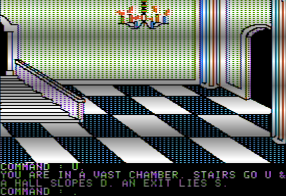
広大な部屋にいます。
冒険者はそのまま上へと向かい、天井の高い広々とした部屋へと出ました。
ターン 62 ・ 入力: S
— 第 63 場 —
お城の南北の入り口にいます。
南へと歩みを進めると、お城のメインの入り口が見えてきました。
ターン 63 ・ 入力: S
— 第 64 場 —
薄暗いお城の前に立っています。
ついに外へ出ると、目の前には不気味に佇む薄暗いお城が広がっていました。
ターン 64 ・ 入力: S
— 第 65 場 —
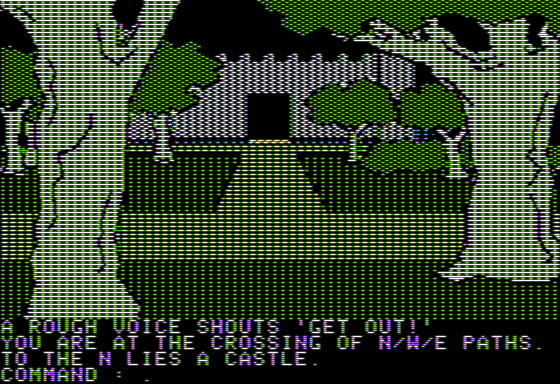
「出ていけ！」という荒々しい声が響き渡りました。
冒険者がお城に近づこうとすると、どこからか恐ろしい怒鳴り声が聞こえてきました。びっくりした冒険者は、慌てて道を戻りました。
ターン 65 ・ 入力: W
— 第 66 場 —
壊れた馬車が止まっている場所に着きました。
道を歩いていると、古びて壊れた馬車がポツンと置かれていました。一体ここで何があったのでしょうか。
ターン 66 ・ 入力: W
— 第 67 場 —
 まだ森の中にいます。
まだ森の中にいます。
冒険者はさらに森の奥へと進んでいきました。あたりは静まり返り、木々が深く茂っています。
ターン 67 ・ 入力: N
— 第 68 場 —
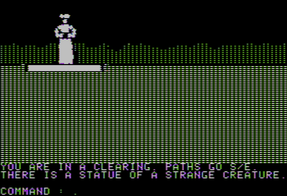
開けた場所に出ました。そこには奇妙な生き物の像が立っています。
ふと視界が開けると、そこには不思議な生き物の石像が立っていました。近くでガサガサと何かが動く音が聞こえます。
ターン 68 ・ 入力: S
— 第 69 場 —
まだ森の中にいます。
冒険者は少し不安になり、再び森の中へと戻っていきました。
ターン 69 ・ 入力: S
— 第 70 場 —
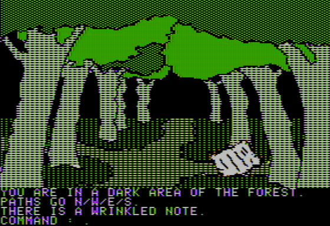
森の暗い場所に辿り着きました。しわくちゃの手紙が落ちています。
どんどん辺りが暗くなり、深い森の奥へと入り込みました。すると足元に、古くしわくちゃになった手紙が落ちていました。
ターン 70 ・ 入力: N
— 第 71 場 —
 土の道の脇に小屋が見えます。後ろには丸太小屋があります。
土の道の脇に小屋が見えます。後ろには丸太小屋があります。
さらに歩いていくと、小さな小屋と丸太小屋が並ぶ場所に出ました。
ターン 71 ・ 入力: PULL HORNS
— 第 72 場 —
ここにはありません。
冒険者は何かを探そうとしましたが、そこには何もありませんでした。どうすればいいのでしょうか。
ターン 72 ・ 入力: ENTER LOG CABIN
— 第 73 場 —
あなたは土の道のそばにいます。後ろには丸太小屋があります。
冒険者は、森の中にある古びた丸太小屋を見つけました。何か手がかりがあるかもしれません。
ターン 73 ・ 入力: EXAMINE LOG CABIN
— 第 74 場 —
冒険者は小屋の中に入ろうとしましたが、なかなかうまくいきません。
ターン 74 ・ 入力: GO CABIN
— 第 75 場 —
あなたは丸太小屋の中にいます。
やっとのことで、冒険者は丸太小屋の中に入ることができました。
ターン 75 ・ 入力: PULL HORNS
— 第 76 場 —
壁が回転し……あなたは秘密の部屋にいます。そこには埃っぽい魔法使いのマントがありました。
ふとある仕掛けを動かすと、壁がぐるりと回転しました。そこには秘密の部屋があり、不思議なマントが掛けられていました。
ターン 76 ・ 入力: TAKE CLOAK
— 第 77 場 —
持ち物が多すぎます。先に何かを捨ててください。
冒険者はマントを手に取ろうとしましたが、荷物が重すぎて持てませんでした。
ターン 77 ・ 入力: DROP PISTOL
— 第 78 場 —
いいですよ。そこには煙を上げる火打ち石式ピストルがあります。
そこで冒険者は、持っていたピストルをそっと床に置くことにしました。
ターン 78 ・ 入力: TAKE CLOAK
— 第 79 場 —
いいですよ。遠くで時計が1時を告げました。
これでようやく、魔法使いのマントを手に入れることができました。そのとき、遠くから鐘の音がひとつ、響き渡りました。
ターン 79 ・ 入力: <SPACE>
— 第 80 場 —
そこには煙を上げる火打ち石式ピストルがあります。
足元には、先ほど置いたピストルが静かに横たわっていました。
ターン 80 ・ 入力: PULL HORNS
— 第 81 場 —
丸太小屋の中にいます。西に出口があります。
冒険者が角を引くと、突然壁がぐるぐると回り出しました。気づけば、そこは静かな丸太小屋の中でした。
ターン 81 ・ 入力: W
— 第 82 場 —
南北に走る土道のわきにある、小屋の前にいます。後ろには丸太小屋が見えます。
小屋の外へ出ると、目の前には一本の土道が伸びていました。
ターン 82 ・ 入力: S
— 第 83 場 —
森の暗い場所にいます。道は北、西、東、南に続いています。しわくちゃの手紙が落ちています。
道なりに南へ進むと、あたりは深い森になり、辺りは暗くなってきました。足元には、古びたしわくちゃの手紙が落ちていました。
ターン 83 ・ 入力: E
— 第 84 場 —
 岩崩れで塞がれた洞窟の入り口の近くにいます。道は西と南に続いています。
岩崩れで塞がれた洞窟の入り口の近くにいます。道は西と南に続いています。
さらに東へ歩いていくと、大きな岩でふさがった洞窟の入り口を見つけました。
ターン 84 ・ 入力: S
— 第 85 場 —
かすかな文字が刻まれた古い切り株の前にいます。道は北に続いています。
冒険者は南へ向かい、不思議な文字が刻まれた古い切り株の前にたどり着きました。
ターン 85 ・ 入力: N
— 第 86 場 —
岩崩れで塞がれた洞窟の入り口の近くにいます。道は西と南に続いています。
再び北へ戻ると、またあの岩崩れの洞窟の前に戻ってきました。
ターン 86 ・ 入力: W
— 第 87 場 —
 森の暗い場所にいます。道は北、西、東、南に続いています。しわくちゃの手紙が落ちています。
森の暗い場所にいます。道は北、西、東、南に続いています。しわくちゃの手紙が落ちています。
今度は西へ進み、暗い森の中へ戻りました。そこにはまだ、あの手紙が残っていました。
ターン 87 ・ 入力: E
— 第 88 場 —
岩崩れで塞がれた洞窟の入り口の近くにいます。道は西と南に続いています。
もう一度北へ向かうと、またしても岩で塞がれた洞窟の入り口にたどり着きました。
ターン 88 ・ 入力: N
— 第 89 場 —
森の暗い場所にいます。しわくちゃの手紙が落ちています。
冒険者は西へ歩き、森の暗い場所にたどり着きました。足元を見ると、古くしわくちゃになった手紙が落ちていました。
ターン 89 ・ 入力: W
— 第 90 場 —
 森の暗い場所にいます。
森の暗い場所にいます。
あたりはとても暗く、どちらへ進むべきか迷ってしまいます。冒険者は慎重に辺りを見回しました。
ターン 90 ・ 入力: N
— 第 91 場 —
土の道のそばに小屋があります。後ろには丸太小屋が見えます。
北へ向かうと、土の道の脇に小さな小屋が現れました。振り返ると、そこには丸太小屋がひっそりと立っていました。
ターン 91 ・ 入力: N
— 第 92 場 —
壊れた馬車が止まっています。
さらに北へ進むと、壊れた馬車が道端に捨てられていました。かつて誰が使っていたのか、寂しい光景です。
ターン 92 ・ 入力: E
— 第 93 場 —
 道の分かれ道にいます。北にはお城が見えます。
道の分かれ道にいます。北にはお城が見えます。
道を東へ進むと、三叉路にたどり着きました。遠く北の方には、大きな お城がそびえ立っています。
ターン 93 ・ 入力: E
— 第 94 場 —
不気味な森の中にいます。
冒険者は東へと足を向けましたが、そこはとても不気味な空気の漂う森でした。
ターン 94 ・ 入力: S
— 第 95 場 —
粘土で作られた小屋の近くにいます。
南へ歩いていくと、粘土で作られた不思議な小屋を見つけました。
ターン 95 ・ 入力: ENTER HUT
— 第 96 場 —
粘土小屋の中にいます。黒い猫がいて、弱い酸の瓶とほうきがあります。
小屋の中に入ると、「シャーッ！」と激しく鳴く黒い猫がいました。部屋には酸の瓶とほうきが置かれていました。
ターン 96 ・ 入力: DROP MICE
— 第 97 場 —
ネズミが逃げ出し、猫がそれを追いかけました。
冒険者がネズミを逃がしてあげると、黒い猫は夢中になって追いかけていきました。
ターン 97 ・ 入力: TAKE ACID
— 第 98 場 —
弱い酸の瓶を手に入れました。
猫がいなくなった隙に、冒険者は棚にあった酸の瓶をそっと手に取りました。
ターン 98 ・ 入力: W
— 第 99 場 —
小屋の近くにいます。
冒険者は小屋を出て、静かな森の中へと戻りました。
ターン 99 ・ 入力: N
— 第 100 場 —
不気味な森の中にいます。
あたりは不気味な空気に包まれています。冒険者は慎重に北へ歩き出しました。
ターン 100 ・ 入力: W
— 第 101 場 —
 三叉路にいます。北にはお城が見えます。
三叉路にいます。北にはお城が見えます。
道が分かれている場所にたどり着きました。遠くの方に大きな、不気味なお城が見えています。
ターン 101 ・ 入力: W
— 第 102 場 —
 壊れた馬車が止まっています。
壊れた馬車が止まっています。
道を進むと、古びて壊れた馬車がぽつんと置かれていました。
ターン 102 ・ 入力: S
— 第 103 場 —
 土道の先に小屋が見えます。後ろには丸太小屋があります。
土道の先に小屋が見えます。後ろには丸太小屋があります。
さらに南へ歩くと、小さな小屋が現れました。
ターン 103 ・ 入力: S
— 第 104 場 —
巨大なワシが急降下してきて、あなたを掴み、森の別の場所へと運び去りました。
そのとき、空から巨大なワシが舞い降りてきました。冒険者は鋭い爪で掴まれ、あっという間に遠くへ運ばれてしまいました。
ターン 104 ・ 入力: <SPACE>
— 第 105 場 —
粘土の小屋の近くにいます。
気がつくと、冒険者は見たこともない粘土の小屋の前に降り立っていました。ここは一体どこなのでしょうか。
ターン 105 ・ 入力: N
— 第 106 場 —
 不気味な森の中にいます。
不気味な森の中にいます。
辺りを探索して北へ進むと、あたりは不気味な空気に包まれた深い森になっていました。
ターン 106 ・ 入力: W
— 第 107 場 —
 三差路にいます。北にはお城が見えます。
三差路にいます。北にはお城が見えます。
さらに西へ歩いていくと、道が分かれていました。遠く北の方には、大きな お城がそびえ立っています。
ターン 107 ・ 入力: W
— 第 108 場 —
 壊れた馬車のそばに立っています。
壊れた馬車のそばに立っています。
冒険者が西へ向かうと、そこには古びて壊れた馬車がぽつんと取り残されていました。
ターン 108 ・ 入力: S
— 第 109 場 —
土の道のそばにある小屋の前にいます。後ろには丸太小屋があります。
南へ進むと、土の道の脇に小さな小屋と丸太小屋が並んでいました。
ターン 109 ・ 入力: S
— 第 110 場 —
 森の暗い場所にいます。しわくちゃの手紙が落ちています。
森の暗い場所にいます。しわくちゃの手紙が落ちています。
東へ向かうと、光の届かない暗い森に入り込みました。足元を見ると、しわくちゃになった手紙が落ちていました。
ターン 110 ・ 入力: E
— 第 111 場 —
 岩崩れで塞がった洞窟の入り口の近くにいます。
岩崩れで塞がった洞窟の入り口の近くにいます。
さらに南へ進むと、大きな岩に塞がれて誰も入れない洞窟の入り口を見つけました。
ターン 111 ・ 入力: S
— 第 112 場 —
かすかに文字が刻まれた古い切り株の前にいます。「出ていけ！」という荒い声が聞こえました。
さらに奥へ進むと、不思議な文字が刻まれた古い切り株がありました。すると突然、「出ていけ！」という恐ろしい怒鳴り声が響き渡りました。
ターン 112 ・ 入力: POUR ACID
— 第 113 場 —
酸が文字の上で激しく泡立ち、内容が読めるようになりました。
冒険者は持っていた酸を切り株にかけました。すると、消えかかっていた文字がくっきりと浮かび上がりました。
ターン 113 ・ 入力: READ STUMP
— 第 114 場 —
おっと！瓶が滑って、ガシャン！
しかし、不注意に手が滑ってしまい、瓶が地面に落ちて割れてしまいました。
ターン 114 ・ 入力: READ STUMP
— 第 115 場 —
そこには「ここを叩け」と書いてありました。
もう一度文字をよく読むと、「ここを叩け」という不思議な指示が書いてありました。
ターン 115 ・ 入力: KNOCK STUMP
— 第 116 場 —
パッ！あなたは小さな暗い洞窟にいます。そこには魔法の本がありました。
冒険者が切り株をコンコンと叩くと、突然目の前が切り替わり、暗い洞窟の中へと運ばれました。そこには一冊の魔法の本が置かれていました。
ターン 116 ・ 入力: READ BOOK
— 第 117 場 —
ページは一枚しか残っていませんでした。「魔法の薬についてー」
冒険者が本を開くと、ほとんどのページが破り取られており、たった一枚だけが残っていました。
ターン 117 ・ 入力: <SPACE>
— 第 118 場 —
容器を振って中身を活性化させ、対象に注ぎます。
そこには、魔法の薬を使って呪いを解くための特別な使い方が記されていました。
ターン 118 ・ 入力: <SPACE>
— 第 119 場 —
最後に、手を叩いて呪文を完成させます。
最後に手を叩くことで、魔法が完成するということが分かりました。
ターン 119 ・ 入力: CATCH FLIES
— 第 120 場 —
多くのハエは逃げましたが、紙で数匹捕まえることができました。
洞窟の中を飛び回るハエの群れを見つけた冒険者は、手元の紙を使って、何匹かのハエを捕まえました。
ターン 120 ・ 入力: <SPACE>
— 第 121 場 —
 小さな暗い洞窟にいます。北の壁にドアがあります。
小さな暗い洞窟にいます。北の壁にドアがあります。
冒険者は、暗い洞窟の中で辺りを見回しました。そこには古びた魔法の本が置かれていました。
ターン 121 ・ 入力: SEARCH CLOAK
— 第 122 場 —
マントのひだの中からロックピックが見つかりました。魔女の高笑いが夜の静寂に響き渡ります。
ふとマントのポケットを探ってみると、鍵開けに使う道具が見つかりました。するとどこからか、魔女の恐ろしい笑い声が聞こえてきました。
ターン 122 ・ 入力: PICK LOCK
— 第 123 場 —
（鍵を開けようとしましたが、できませんでした）
冒険者は急いでドアの鍵を開けようとしましたが、うまくいきません。
ターン 123 ・ 入力: PICK LOCK DOOR
— 第 124 場 —
（ドアのロックを解除しようとしましたが、できませんでした）
どうにかして中に入ろうと試行錯誤しますが、ドアはびくともしません。
ターン 124 ・ 入力: UNLOCK DOOR
— 第 125 場 —
（ドアの鍵を開けることができませんでした）
何度やり直しても、頑丈な鍵は開かないままでした。
ターン 125 ・ 入力: USE PICK
— 第 126 場 —
（道具を使おうとしましたが、うまくいきませんでした）
冒険者は道具を手に取りましたが、使い方が分からず困ってしまいました。
ターン 126 ・ 入力: OPEN DOOR
— 第 127 場 —
（ドアを開けることができませんでした）
力ずくでドアを開けようとしてみましたが、やはり開きません。
ターン 127 ・ 入力: TAKE PICK
— 第 128 場 —
いいですよ。
冒険者はもう一度落ち着いて、鍵開けの道具をしっかりと手に取りました。
ターン 128 ・ 入力: PICK LOCK
— 第 129 場 —
小さな暗い洞窟です。北の壁にドアがあります。
冒険者は鍵開けの道具を使い、ついに重いドアの鍵を開けました。
ターン 129 ・ 入力: ENTER DOOR
— 第 130 場 —
洞窟の中にいます。鍾乳石の上に水晶玉が置かれています。
ドアを開けて中に入ると、そこは静かな洞窟でした。不思議なことに、鍾乳石の上にキラキラと輝く水晶玉が置かれていました。
ターン 130 ・ 入力: EXAMINE CRYSTAL BALL
— 第 131 場 —
水晶玉を覗き込むと、不自然なほど眩しく燃える小さなオレンジ色の炎が見えました。
冒険者が水晶玉をじっと覗き込むと、中に小さなオレンジ色の炎がゆらゆらと揺れていました。
ターン 131 ・ 入力: <SPACE>
— 第 132 場 —
炎を深く覗き込むと、森の中の像のそばに立っている自分自身の姿が見えました。魔法使いのローブをまとった人物が像に近づいてきます。
さらに深く覗き込むと、そこには森の中に立つ自分の姿が映っていました。すると、魔法使いのような服を着た人がゆっくりと近づいてきました。
ターン 132 ・ 入力: <SPACE>
— 第 133 場 —
その人の手には、白い炎を放つ黄金の指輪がはめられていました。彼が手を振ると……
魔法使いの手には、白く光る黄金の指輪がはまっていました。彼がふわりと手をかざすと、不思議なことが起こります。
ターン 133 ・ 入力: <SPACE>
— 第 134 場 —
像の周りのすべてが鮮やかな緑色の炎に包まれました。激しい雷鳴のような衝撃が走り……
突然、あたり一面がまばゆい緑色の炎に包まれました。ゴロゴロと大きな雷のような音が鳴り響きます。
ターン 134 ・ 入力: <SPACE>
— 第 135 場 —
あなたは正気に戻り、水晶玉から遠ざかりました。
ハッと気づくと、冒険者は元の洞窟に戻っていました。あまりの衝撃に、ゆっくりと水晶玉から離れました。
ターン 135 ・ 入力: ENTER DOOR
— 第 136 場 —
冒険者はしばらくの間、見たことのない不思議な光景に心を奪われていました。
ターン 136 ・ 入力: ENTER DOOR
— 第 137 場 —
あなたは小さく暗い洞窟にいます。北の壁にはドアがあります。ここには、ハエ取り紙と魔法の本があります。
冒険者がたどり着いたのは、小さく暗い洞窟の中でした。そこには不思議な魔法の本が静かに置かれていました。
ターン 137 ・ 入力: TAKE BOOK
— 第 138 場 —
本を取ろうとすると、謎の声が叫びました。「それは私のものだ！立ち去れ！」……あなたは森に戻されました。
冒険者が本を手に取ろうとしたその時、恐ろしい声が響き渡りました。強い力に弾き飛ばされ、気がつくと元の森に戻っていました。
ターン 138 ・ 入力: <SPACE>
— 第 139 場 —
かすかな文字が刻まれた古い切り株の前にいます。北に道が続いています。
目の前には、古びた切り株がぽつんと立っていました。そこには何か不思議な文字が書き込まれていました。
ターン 139 ・ 入力: N
— 第 140 場 —
岩崩れで塞がれた洞窟の入り口の近くにいます。道は西と南へ続いています。
冒険者はさらに歩き進みましたが、大きな岩に塞がれた洞窟の入り口を見つけました。
ターン 140 ・ 入力: W
— 第 141 場 —
 森の暗い場所にいます。道は東西南北に分かれています。しわくちゃの手紙が落ちています。
森の暗い場所にいます。道は東西南北に分かれています。しわくちゃの手紙が落ちています。
あたりが暗くなり、森の深いところへ迷い込みました。足元を見ると、古ぼけた手紙が落ちていました。
ターン 141 ・ 入力: N
— 第 142 場 —
 南北に走る土道の脇にある小屋の前にいます。後ろには丸太小屋があります。
南北に走る土道の脇にある小屋の前にいます。後ろには丸太小屋があります。
森を抜けると、土道の脇に小さな小屋が見えてきました。
ターン 142 ・ 入力: N
— 第 143 場 —
壊れた馬車のそばに立っています。道は東西南北に分かれています。
道なりに進むと、壊れて捨てられた馬車が寂しそうに佇んでいました。
ターン 143 ・ 入力: W
— 第 144 場 —
あなたはまだ森の中にいます。道は北、東、南へ続いています。
冒険者は再び深い森の中へと足を踏み入れました。どこへ行けばいいのか、あたりを見回しました。
ターン 144 ・ 入力: N
— 第 145 場 —
 開けた場所にいます。奇妙な生き物の像があります。
開けた場所にいます。奇妙な生き物の像があります。
森を歩き続けた冒険者は、小さな広場に出ました。そこには見たこともない奇妙な生き物の石像が立っていました。
ターン 145 ・ 入力: WEAR CLOAK
— 第 146 場 —
（マントを着用しました）
冒険者は身を守るために、大切に持っていたマントをしっかりと身にまといました。
ターン 146 ・ 入力: WEAR RING
— 第 147 場 —
（指輪をはめました）
さらに、不思議な力が宿る指輪を指にはめました。準備はすべて整いました。
ターン 147 ・ 入力: WAVE RING
— 第 148 場 —
指輪から白い炎が放たれ、像を包み込みました。緑と白の炎が激しく燃え上がります。
冒険者が指輪をかざすと、まばゆい白い炎が飛び出し、石像を飲み込みました。あたり一面が激しい炎に包まれます。
ターン 148 ・ 入力: <SPACE>
— 第 149 場 —
突然、赤い火の玉が現れ、白と緑の炎を消し去りました。
すると突然、真っ赤な火の玉が空から舞い降りてきました。激しい勢いで、先ほどの炎をすべて消し去ってしまったのです。
ターン 149 ・ 入力: <SPACE>
— 第 150 場 —
火の玉の前に、異形の生き物のシルエットが現れ、闇の中へと歩み寄ってきました。
火の玉の向こうから、不思議な姿をした生き物が姿を現しました。その生き物はゆっくりと、冒険者のもとへ歩いてきました。
ターン 150 ・ 入力: <SPACE>
— 第 151 場 —
「お会いできて光栄です！呪われた牢獄から救い出してくれたのですね。あなたには大変感謝いたします！」
「助けてくれてありがとう！」と、生き物は丁寧にお礼を言いました。生き物は冒険者の指にある指輪をそっと掴みました。
ターン 151 ・ 入力: <SPACE>
— 第 152 場 —
生き物が指輪を砕くと激しい爆発が起こりました。煙が消えると、像も生き物も消えていました。
生き物が指輪をギュッと握りつぶすと、大きな爆発が起こりました。煙が晴れたときには、石像も生き物もどこかへ消えていました。
ターン 152 ・ 入力: <SPACE>
— 第 153 場 —
「よくぞ会えました！呪いの牢獄から救ってくれてありがとう！」
不思議な生き物が冒険者に深く感謝しました。そして指輪をギュッと握りつぶすと、激しい爆発が起こりました。
ターン 153 ・ 入力: S
— 第 154 場 —
幽霊のような奇妙な姿が、「オー、オー……」と悲しげに泣きながら通り過ぎていきました。
煙が消えると、そこには誰もいませんでした。森を歩いていると、悲しそうに泣く幽霊がひょろりと通り過ぎていきました。
ターン 154 ・ 入力: N
— 第 155 場 —
あなたは広場にいます。
冒険者は再び、木々に囲まれた静かな広場へと戻ってきました。
ターン 155 ・ 入力: E
— 第 156 場 —
あなたは墓地にいます。そこには墓石があります。
さらに歩いていくと、ひっそりとした墓地にたどり着きました。そこには古びた墓石がひとつ立っていました。
ターン 156 ・ 入力: W
— 第 157 場 —
 あなたは広場にいます。
あなたは広場にいます。
冒険者は少し不安になり、もう一度広い場所へと戻ることにしました。
ターン 157 ・ 入力: S
— 第 158 場 —
 あなたはまだ森の中にいます。
あなたはまだ森の中にいます。
深い森の中は、どこを歩いても似たような景色が続いています。
ターン 158 ・ 入力: N
— 第 159 場 —
 あなたは広場にいます。
あなたは広場にいます。
冒険者は再び、あの開けた広場へとやってきました。
ターン 159 ・ 入力: E
— 第 160 場 —
あなたは墓地にいます。そこには墓石があります。
もう一度、静まり返った墓地へと足を踏み入れました。冷たい風が吹いています。
ターン 160 ・ 入力: S
— 第 161 場 —
 壊れた馬車が止まっています。
壊れた馬車が止まっています。
冒険者は森の中を歩き、壊れた馬車のそばに辿り着きました。あたりはひっそりと静まり返っています。
ターン 161 ・ 入力: N
— 第 162 場 —
遠くで狼の遠吠えが聞こえます。墓地には墓石がひとつあります。
再び墓地へ戻ると、遠くから狼の悲しげな遠吠えが聞こえてきました。冷たい石の墓標が、月明かりに照らされています。
ターン 162 ・ 入力: W
— 第 163 場 —
開けた場所に出ました。
冒険者は墓地を離れ、木々のない開けた場所へと足を進めました。
ターン 163 ・ 入力: ENTER SHIP
— 第 164 場 —
ここでは何もできません。
何か不思議な乗り物があるかと思いましたが、ここには何もありませんでした。
ターン 164 ・ 入力: S
— 第 165 場 —
 まだ森の中にいます。
まだ森の中にいます。
冒険者は方向を変え、深い森の中へと戻っていきました。
ターン 165 ・ 入力: N
— 第 166 場 —
 開けた場所に出ました。
開けた場所に出ました。
再び歩き続けると、また先ほどの開けた場所に戻ってきました。
ターン 166 ・ 入力: ENTER SHIP
— 第 167 場 —
遠くで時計が2回鳴りました。
ふと耳を澄ますと、遠い街の時計塔が夜の2時を告げました。時間は刻々と過ぎていきます。
ターン 167 ・ 入力: <SPACE>
— 第 168 場 —
墓地には墓石がひとつあります。
冒険者は再び、あの静かな墓地へと戻ってきました。
ターン 168 ・ 入力: E
— 第 169 場 —
 墓地にいます。墓石があります。
墓地にいます。墓石があります。
そこには、古びた墓石がひとつ静かに立っていました。
ターン 169 ・ 入力: W
— 第 170 場 —
巨大なワシが急降下してきて、あなたを掴み、森の別の場所へと連れ去りました。
すると突然、空から巨大なワシが舞い降りてきました。冒険者は鋭い爪で掴み上げられ、あっという間に森の遠くへと運ばれていきました。
ターン 170 ・ 入力: <SPACE>
— 第 171 場 —
 森の暗い場所にいます。しわくちゃの手紙が落ちています。
森の暗い場所にいます。しわくちゃの手紙が落ちています。
目が覚めると、そこは森のとても暗い場所でした。足元を見ると、しわくちゃになった不思議な手紙が落ちていました。
ターン 171 ・ 入力: N
— 第 172 場 —
 未舗装の道のそばに小屋があります。後ろには丸太小屋が見えます。
未舗装の道のそばに小屋があります。後ろには丸太小屋が見えます。
冒険者が北へ歩いていくと、道端に小さな小屋が現れました。後ろを振り返ると、もうひとつ丸太小屋が建っていました。
ターン 172 ・ 入力: N
— 第 173 場 —
 壊れた馬車が止まっている場所に立っています。
壊れた馬車が止まっている場所に立っています。
さらに進むと、そこには壊れて動かなくなった馬車がぽつんと取り残されていました。
ターン 173 ・ 入力: W
— 第 174 場 —
流れ星が見えた気がしました！まだ森の中にいます。
ふと夜空を見上げると、キラリと光る流れ星が流れたように見えました。
ターン 174 ・ 入力: N
— 第 175 場 —
広場にいます。まばゆく光る円盤があります。
森を抜けて広場に出ると、そこには見たこともない、まばゆく光り輝く円盤が降りていました。
ターン 175 ・ 入力: ENTER SHIP
— 第 176 場 —
素晴らしい！実に魅力的だ！…ああっ、だめだ！あたりが真っ暗になっていく。助けてくれ！！
冒険者が勇気を出して円盤の中に入ると、不思議な光に包まれました。しかし突然、視界が真っ暗になり、恐ろしい出来事が始まります。
ターン 176 ・ 入力: <SPACE>
— 第 177 場 —
そこには煙を上げる焼け焦げた草むらがありました。
気がつくと、冒険者は地面が焼け焦げた不思議な場所に立っていました。あたりには煙が立ち込め、何が起きたのか分からず途方に暮れます。
ターン 177 ・ 入力: INVENTORY
— 第 178 場 —
持ち物：魔法使いの古びたマント、木の十字架、ハエ、ロックピック、小さな黒い金属の箱。
冒険者は自分の持ち物を確認しました。不思議な道具がいくつかありましたが、これらが助けになるかもしれません。
ターン 178 ・ 入力: S
— 第 179 場 —
あなたはまだ森の中にいます。
冒険者は静かに歩き出し、深い森の中を進んでいきました。
ターン 179 ・ 入力: S
— 第 180 場 —
 森の暗い場所にやってきました。しわくちゃの手紙が落ちています。
森の暗い場所にやってきました。しわくちゃの手紙が落ちています。
森は次第に暗くなり、不気味な空気に包まれました。ふと足元を見ると、古びた手紙が落ちていました。
ターン 180 ・ 入力: S
— 第 181 場 —
湖の岸辺にやってきました。ウシガエルと小さな帆船があります。
さらに進むと、目の前に静かな湖が広がっていました。そこには一匹の大きなウシガエルと、小さな舟が浮かんでいました。
ターン 181 ・ 入力: FEED FROG
— 第 182 場 —
ウシガエルが飛びかかってきて、ハエをぺろりと食べました。「ありがとう」とカエルが言いました。
冒険者が持っていたハエをあげると、ウシガエルは大喜びで食べてくれました。なんと、このカエルはおしゃべりができたのです。
ターン 182 ・ 入力: <SPACE>
— 第 183 場 —
「ゴブリンに『IJNID』と伝えてくれ」と言い残し、カエルは濁った湖の水の中へ消えていきました。
カエルはお礼に、ゴブリンに伝えるべき秘密の言葉を教えてくれました。そして、ひょいと湖の中へ飛び込み、姿を消しました。
ターン 183 ・ 入力: E
— 第 184 場 —
背後から不気味な笑い声が聞こえてきました。
一人になったと思ったその時、後ろからぞっとするような笑い声が聞こえてきました。冒険者は恐る恐る振り返りました。
ターン 184 ・ 入力: E
— 第 185 場 —
 森の暗い場所にいます。しわくちゃの手紙が落ちています。
森の暗い場所にいます。しわくちゃの手紙が落ちています。
冒険者は暗い森の中を歩いていました。ふと足元を見ると、古くてしわくちゃな手紙が落ちていました。
ターン 185 ・ 入力: N
— 第 186 場 —
 道沿いに小屋があります。後ろには丸太小屋が見えます。
道沿いに小屋があります。後ろには丸太小屋が見えます。
北へ進むと、道沿いに小さな小屋が現れました。後ろを振り返ると、そこには丸太小屋がひっそりと立っていました。
ターン 186 ・ 入力: N
— 第 187 場 —
 壊れた馬車が止まっている場所です。
壊れた馬車が止まっている場所です。
さらに歩いていくと、壊れた馬車が捨てられている場所にたどり着きました。
ターン 187 ・ 入力: E
— 第 188 場 —
三差路にいます。北の方に城が見えます。
道が分かれる三差路に出ると、遠くの北の空に不気味な城がそびえ立っていました。
ターン 188 ・ 入力: E
— 第 189 場 —
不気味な森の中にいます。
冒険者は城を横目に、さらに深く、不気味な森の中へと足を踏み入れました。
ターン 189 ・ 入力: E
— 第 190 場 —
砂地にいます。太った小鬼が小さな光る鍵を回して遊んでいます。
森を抜けると、そこは砂の広がる不思議な場所でした。そこには太った小鬼がいて、キラキラ光る小さな鍵をいたずらっぽく回していました。
ターン 190 ・ 入力: SAY IJNID
— 第 191 場 —
小鬼が鍵を落として、叫びながら暗闇へと逃げていきました。小さな光る鍵が落ちています。
冒険者が合言葉を唱えると、小鬼はひどく驚いて鍵をポイっと落とし、叫びながら暗闇へ逃げていきました。
ターン 191 ・ 入力: TAKE KEY
— 第 192 場 —
持ち物が多すぎます。先に何かを捨ててください。
冒険者は急いで鍵を拾おうとしましたが、荷物が重すぎて手に持つことができませんでした。
ターン 192 ・ 入力: DROP CLOAK
— 第 193 場 —
ホコリまみれの魔法使いのマントがあります。
冒険者は、大切な鍵を手に入れるために、まずは古びたマントを地面に置きました。
ターン 193 ・ 入力: TAKE KEY
— 第 194 場 —
遠くで狼の遠吠えが聞こえます。
ようやく小さな鍵を手にしましたが、まだ荷物が重すぎます。遠くから狼の不気味な声が聞こえてきました。
ターン 194 ・ 入力: DROP PICK
— 第 195 場 —
魔女の笑い声が、静まり返った夜の空気に響き渡ります。
冒険者はさらに荷物を減らすため、十字架とロックピックを置いていきました。すると、どこからか魔女の恐ろしい笑い声が聞こえてきました。
ターン 195 ・ 入力: N
— 第 196 場 —
不気味な森の中にいます。
怖くなった冒険者は、急いでその場を離れました。辿り着いたのは、暗くて不気味な森の中でした。
ターン 196 ・ 入力: W
— 第 197 場 —
三叉路にいます。北にはお城が見えます。
さらに森を進むと、道が分かれていました。北の方を眺めると、大きな、大きなお城がそびえ立っていました。
ターン 197 ・ 入力: W
— 第 198 場 —
壊れた馬車が止まっています。
冒険者は西へと歩いていきました。そこには、古びて壊れた馬車がぽつんと取り残されていました。
ターン 198 ・ 入力: N
— 第 199 場 —
墓地にいます。墓石があります。
そこから北へ向かうと、静まり返った墓地に辿り着きました。目の前には、一つの墓石が立っていました。
ターン 199 ・ 入力: PUSH TOMBSTONE
— 第 200 場 —
それはびくともしません。
冒険者は何かがあるのではないかと思い、墓石をぐっと押してみました。けれど、墓石はとても重く、びくともしませんでした。
ターン 200 ・ 入力: PUSH TOMBSTONE
— 第 201 場 —
びくともしません。
冒険者は何度も何度も、力を込めて墓石を押してみました。けれど、墓石は頑固なまでに動きませんでした。
ターン 201 ・ 入力: OPEN GRATE
— 第 202 場 —
墓石の後ろに格子の扉がありました。大きな錆びついた格子です。鍵がかかっています。
すると、墓石の裏側に古い格子の扉が隠れているのを見つけました。けれど、扉には固い鍵がかかっていました。
ターン 202 ・ 入力: UNLOCK GRATE
— 第 203 場 —
はい。
冒険者が鍵を回すと、カチリと音がしました。ついに扉の鍵が開いたのです。
ターン 203 ・ 入力: OPEN GRATE
— 第 204 場 —
もう開いています。
ゆっくりと扉を開けてみると、そこには暗い地下への道が続いていました。
ターン 204 ・ 入力: ENTER GRATE
— 第 205 場 —
墓地の地下にある秘密の部屋です。魔法のエリクサーがあります。
中へ降りていくと、そこは不思議な秘密の部屋でした。そこにはキラキラと輝く魔法のエリクサーが置かれていました。
ターン 205 ・ 入力: TAKE ELIXIR
— 第 206 場 —
はい。
冒険者は大切そうに、その魔法のエリクサーを手に取りました。
ターン 206 ・ 入力: U
— 第 207 場 —
墓地にいます。
宝物を手に入れた冒険者は、再び地上へと戻ってきました。
ターン 207 ・ 入力: S
— 第 208 場 —
 壊れた馬車のある場所に立っています。
壊れた馬車のある場所に立っています。
冒険者は墓地を離れ、壊れた馬車が転がっている道へと歩き出しました。
ターン 208 ・ 入力: E
— 第 209 場 —
三叉路にいます。北にはお城が見えます。
道を進むと、三叉路にたどり着きました。北の方には、大きな お城がそびえ立っています。
ターン 209 ・ 入力: N
— 第 210 場 —
薄暗いお城の前に立っています。
冒険者は、静かに北へと歩きました。目の前には、不気味で薄暗いお城が待ち構えていました。
ターン 210 ・ 入力: N
— 第 211 場 —
 お城の玄関口にいます。
お城の玄関口にいます。
勇気を出してお城の中へ入ると、そこは広い玄関口でした。左右にも道が続いています。
ターン 211 ・ 入力: N
— 第 212 場 —
 広大な部屋にいます。階段が上に伸び、通路が下へと続いています。
広大な部屋にいます。階段が上に伸び、通路が下へと続いています。
さらに奥へ進むと、とても広い部屋に出ました。そこには上へと続く階段がありました。
ターン 212 ・ 入力: U
— 第 213 場 —
高い部屋にいます。階段が下に伸びています。
冒険者は階段を上がり、高い場所にある部屋へとやってきました。
ターン 213 ・ 入力: U
— 第 214 場 —
その方向へは行けません。
もっと上へ行こうとしましたが、そこにはもう道はありませんでした。
ターン 214 ・ 入力: UP
— 第 215 場 —
その方向へは行けません。
どうにかして上に登ろうと試みますが、うまくいきません。
ターン 215 ・ 入力: CLIMB LADDER
— 第 216 場 —
月明かりに照らされた塔の部屋にいます。もつれた蔦がたくさんあります。
ふと見つけると、そこには梯子がありました。それを登ると、月明かりが降り注ぐ美しい塔の部屋にたどり着きました。そこには不思議な蔦が絡まっていました。
ターン 216 ・ 入力: MOVE VINES
— 第 217 場 —
何かを見つけました！大きな石の棺があります。
冒険者が蔦をかき分けてみると、そこには大きな石の棺が隠れていました。
ターン 217 ・ 入力: PUSH BUTTON
— 第 218 場 —
箱からまばゆい光が放たれ、棺を包み込みました。激しい爆発と共に蓋が吹き飛びます。
冒険者が不思議な箱のボタンを押すと、まばゆい光が棺を包み込みました。すると、大きな音と共に棺の蓋が吹き飛びました。
ターン 218 ・ 入力: <SPACE>
— 第 219 場 —
光り輝く塵が降り注ぎます。そこには美しい眠れる乙女がいました。
光り輝く塵がキラキラと舞い落ちる中、棺の中には美しいお姫様が静かに眠っていました。
ターン 219 ・ 入力: WAVE ELIXIR
— 第 220 場 —
冒険者は持っていた魔法のエリクサーを、そっとお姫様にかけました。
ターン 220 ・ 入力: POUR ELIXIR
— 第 221 場 —
遠くの方で稲妻が光るのが見えます。
すると、遠くの空で激しい雷光が走り、不穏な空気が漂い始めました。
ターン 221 ・ 入力: CLAP HANDS
— 第 222 場 —
乙女が少し身じろぎし、ついに目を覚ましました。お姫様が目を覚ましました。
冒険者が手を叩くと、お姫様はゆっくりと身じろぎし、ついにパチリと目を覚ましました。
ターン 222 ・ 入力: GET PRINCESS
— 第 223 場 —
冒険者は喜び、目を覚ましたお姫様の手を優しく取りました。
ターン 223 ・ 入力: D
— 第 224 場 —
高い部屋にいます。階段が下に続いています。
冒険者はお姫様と一緒に、塔の下へと続く階段をゆっくりと降りていきました。
ターン 224 ・ 入力: D
— 第 225 場 —
あなたは広々とした部屋にいます。
階段を降りていくと、とても広い部屋にたどり着きました。冒険者はここからさらに先へと進むことにしました。
ターン 225 ・ 入力: S
— 第 226 場 —
あなたは城の南北の入り口にいます。
さらに歩くと、お城の入り口が見えてきました。ここを抜ければ、外の空気が吸えそうです。
ターン 226 ・ 入力: S
— 第 227 場 —
あなたは薄暗いお城の前に立っています。
ついに、お城の外に出ることができました。目の前には、不気味で薄暗いお城がそびえ立っていました。
ターン 227 ・ 入力: S
— 第 228 場 —
あなたは道が分かれる交差点にいます。
冒険者は、お城を背にして南へと歩き出しました。やがて、いくつもの道が分かれる交差点にたどり着きました。
ターン 228 ・ 入力: W
— 第 229 場 —
あなたは壊れた馬車のそばに立っています。
道を選んで進んでいくと、古くて壊れた馬車が捨てられていました。あたりはとても静かです。
ターン 229 ・ 入力: S
— 第 230 場 —
あなたは土道のそばにある小屋の前にいます。
さらに南へ進むと、小さな小屋が見えてきました。どこからかガサガサと不思議な音が聞こえてきます。
ターン 230 ・ 入力: S
— 第 231 場 —
あなたは森の暗い場所にいます。しわくちゃの手紙が落ちています。
辺りはだんだんと暗くなり、深い森の中に入り込みました。足元を見ると、しわくちゃになった手紙が落ちていました。
ターン 231 ・ 入力: S
— 第 232 場 —
遠くで時計が3時を告げています。
ふと耳を澄ませると、遠くから鐘の音が聞こえてきました。時計が3時を知らせていたのでした。
ターン 232 ・ 入力: <SPACE>
— 第 233 場 —
湖のほとりにいます。小さな帆船が浮かんでいます。
冒険者がたどり着いたのは、静かな湖のほとりでした。そこには一匹のウシガエルと、小さな帆船が待っていました。
ターン 233 ・ 入力: ENTER BOAT
— 第 234 場 —
ボートに乗りました。
冒険者は、ゆっくりとボートに乗り込みました。これからどこへ向かうのでしょうか。
ターン 234 ・ 入力: SAIL
— 第 235 場 —
冒険者は、大切な鍵と不思議な箱、そして目覚めたばかりのお姫様を連れて、出発の準備を整えました。
ターン 235 ・ 入力: SAIL BOAT
— 第 236 場 —
数分間の危うい時間の後、航海は順調に進みました。
波に揺られながら、ドキドキする時間が過ぎていきました。やがてボートは安定し、心地よい風が吹き始めました。
ターン 236 ・ 入力: <SPACE>
— 第 237 場 —
サブリナ姫は丁寧に感謝し、王国へと戻りました。王様は大変感銘を受けました。
無事に王国へ帰り着くと、サブリナ姫は冒険者に心から感謝しました。王様も、勇敢な冒険者の姿を見て、とても喜んでくれました。
ターン 237 ・ 入力: <SPACE>
— 第 238 場 —
王様はもう一人の娘を救うため、あなたをアフリカの奥地へ送りたいと考えました。
王様はさらなる願いを口にしました。もう一人の娘を救うため、冒険者に遠いアフリカまで旅をしてほしいと頼んだのです。
ターン 238 ・ 入力: <SPACE>
— 第 239 場 —
お見事！
こうして、冒険者の新しい旅が始まろうとしていました。サブリナ姫を救い出した勇気ある物語は、ここに完結したのでした。
ターン 239 ・ 入力: <DONE>
おしまい (プレイ記録より生成)